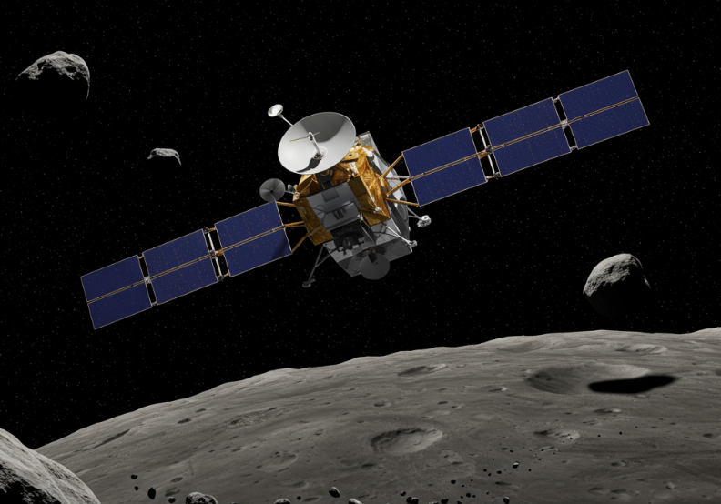

OSIRIS-REx
Agencia: NASA
Fecha de lanzamiento: 8 de septiembre de 2016
Duración: 7 años (misión primaria)
Tipo de misión: Retorno de muestras
Objetivo: Recoger muestras del asteroide Bennu y traerlas a la Tierra para su análisis.
Carga científica: Cámaras ópticas, espectrómetros infrarrojos y de rayos X, altímetro láser, sistema de muestreo TAGSAM.
Impacto histórico
OSIRIS-REx marcó un hito en la exploración de asteroides. Su éxito al recolectar y regresar muestras ofrece una oportunidad única para estudiar los materiales primigenios del sistema solar y comprender mejor los riesgos de impacto de objetos cercanos a la Tierra.
📡 Mensaje Interestelar
La sonda lleva consigo una cápsula del tiempo digital con mensajes, imágenes y obras de arte cargados por personas de todo el mundo. Aunque no fue diseñada para abandonar el sistema solar como las Voyager, esta "postal cósmica" representa un gesto simbólico de humanidad hacia el universo. Su contenido fue seleccionado a través de la campaña .
“Messages to Bennu!” ⬅ Regresar al Manifiesto